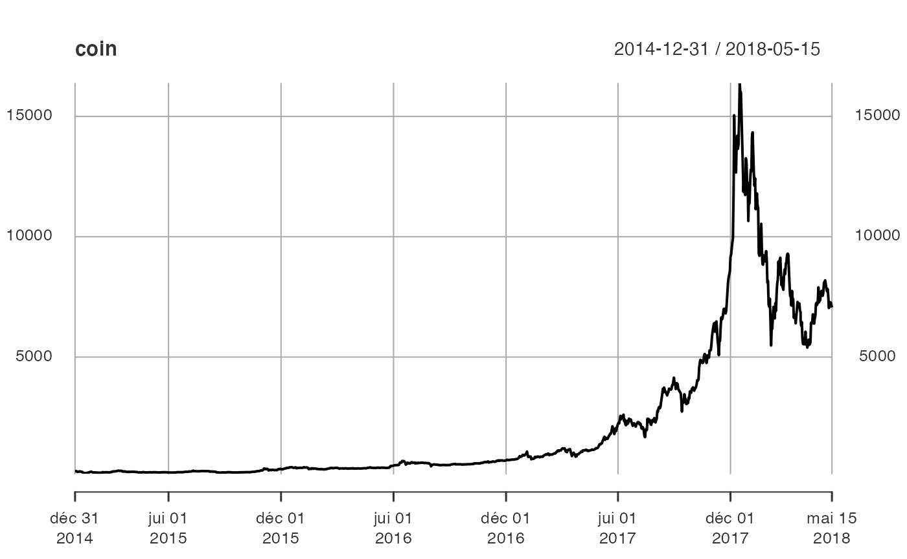
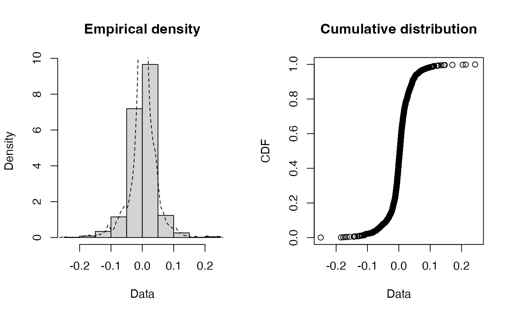
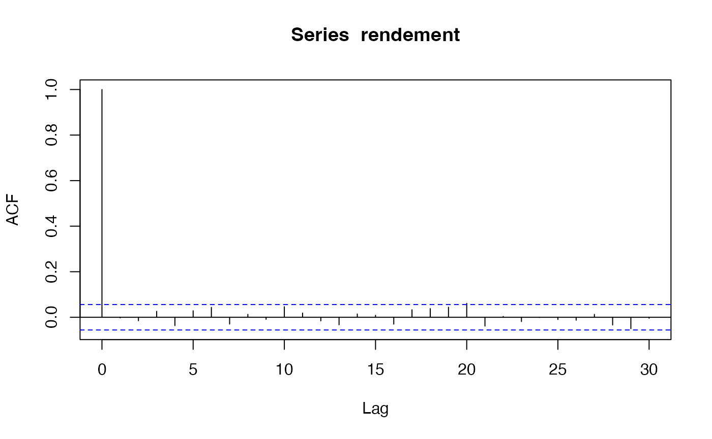
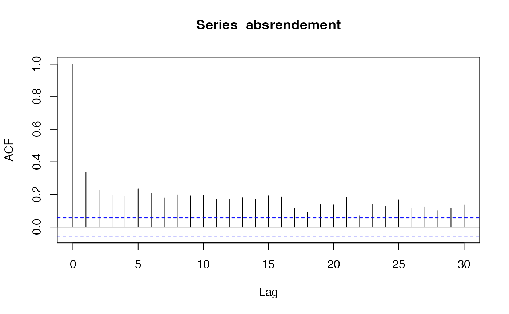
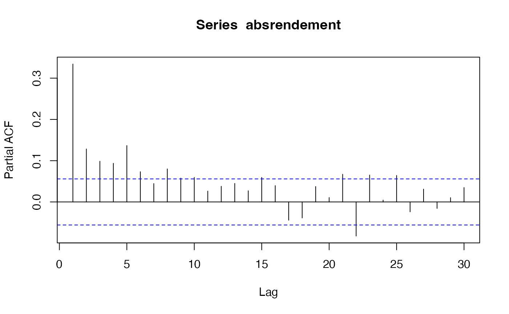
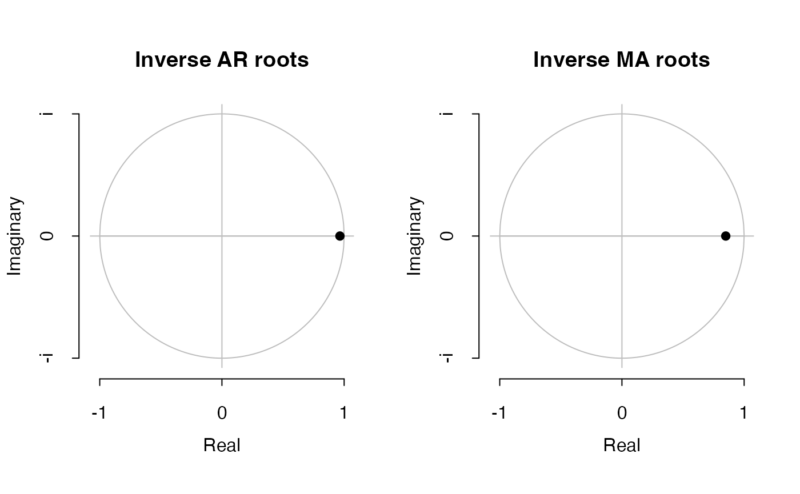
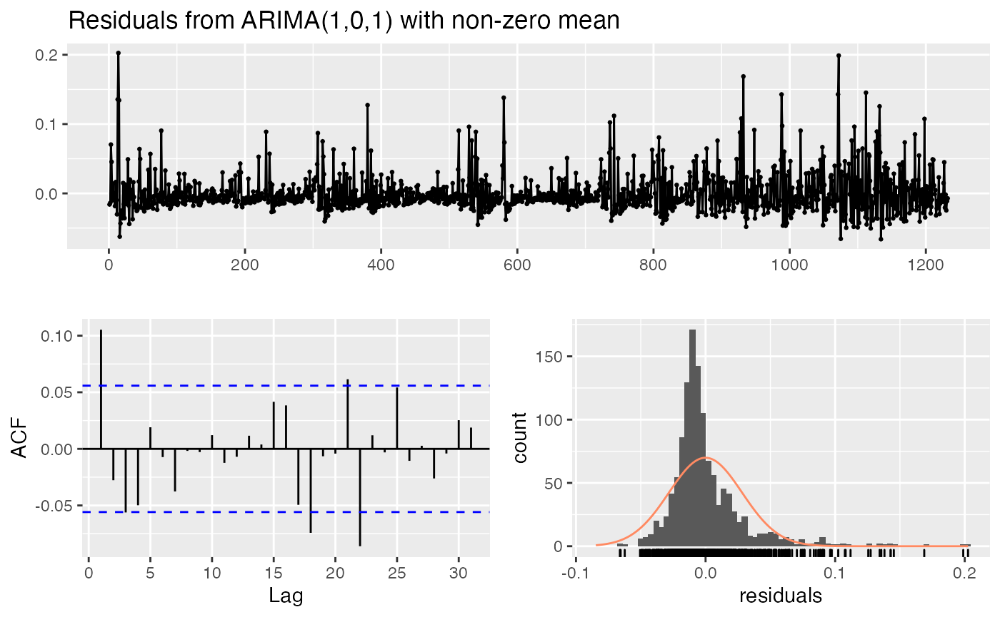
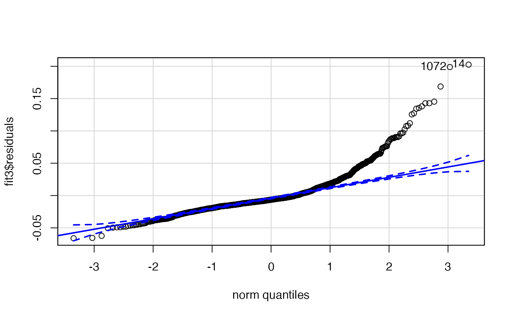
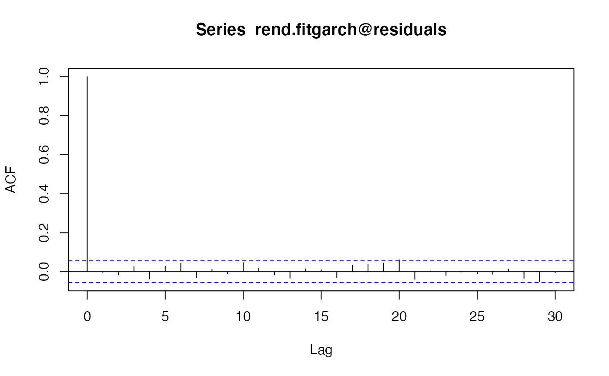

Chapitre 11. Introduction aux séries temporelles.
Tout le code avec R.
Fredj Jawadi et Gilles Dufrenot
2022-09-21
Source:vignettes/CodeChap11.Rmd
CodeChap11.Rmd

|
|
Description des données : Bitcoin
Lecture des données
Description de la base de données Bitcoin
Les données décrivent l’évolution du prix journalier du Bitcoin sur
la période du 31/12/2014 au 15/05/2018. Les
données sont publiques et disponibles sur le site de Yahoo finance (https://fr.finance.yahoo.com/quote/BTC-EUR/history?p=BTC-EUR).
if(!("sageR" %in% installed.packages())){install.packages("sageR")}
library(sageR)
data(bitcoin)Quelques statistiques descriptives du fichier de données
summary(bitcoin)
#> Date Bitcoin
#> Min. :2014-12-31 00:00:00.0 Min. : 149.9
#> 1st Qu.:2015-11-04 00:00:00.0 1st Qu.: 300.1
#> Median :2016-09-06 00:00:00.0 Median : 585.2
#> Mean :2016-09-06 10:27:09.2 Mean : 2125.1
#> 3rd Qu.:2017-07-11 00:00:00.0 3rd Qu.: 2328.6
#> Max. :2018-05-15 00:00:00.0 Max. :16376.3Application pratique. Analyse des séries temporelles avec R : un exemple sur le Bitcoin.
Remarques préliminaires
Dans l’exemple qui suit, on s’intéresse à la modélisation des rendements journaliers du Bitcoin.
Pour faciliter la compréhension, quelques commentaires sont fournis pour l’interprétation des résultats.
Etape 1.- Visualisation des données
La commande View permet d’afficher rapidement à l’écran
la série en entier.
View(bitcoin)On peut également n’afficher que le début et bien que la fin. Dans ce cas, il faut taper les commandes suivantes :
head(bitcoin)
#> # A tibble: 6 × 2
#> Date Bitcoin
#> <dttm> <dbl>
#> 1 2014-12-31 00:00:00 265.
#> 2 2015-01-01 00:00:00 263.
#> 3 2015-01-02 00:00:00 265.
#> 4 2015-01-03 00:00:00 241.
#> 5 2015-01-04 00:00:00 223.
#> 6 2015-01-05 00:00:00 230.
tail(bitcoin)
#> # A tibble: 6 × 2
#> Date Bitcoin
#> <dttm> <dbl>
#> 1 2018-05-10 00:00:00 7037.
#> 2 2018-05-11 00:00:00 7100.
#> 3 2018-05-12 00:00:00 7280.
#> 4 2018-05-13 00:00:00 7264.
#> 5 2018-05-14 00:00:00 7174.
#> 6 2018-05-15 00:00:00 7064.Comme le montrent les sorties R, le fichier a deux
séries : Date et Bitcoin (attention de bien
respecter les lettres majuscules et minuscules).
Etape 2.- Représentation graphique
Il est nécessaire de transformer l’objet bitcoin en une
série temporelle.
Pour ce faire, on appelle le package xts. Puis, on
définit une série temporelle, appelée ici coin que l’on
peut représenter par la fonction plot.
if(!("xts" %in% installed.packages())){install.packages("xts")}
library(xts)
#> Loading required package: zoo
#>
#> Attaching package: 'zoo'
#> The following objects are masked from 'package:base':
#>
#> as.Date, as.Date.numeric
Commentaire
Le graphique montre deux tendances : une première tendance exponentielle de 2014 jusqu’au débit de l’année 2017, et une décroissance exponentielle jusqu’à la fin de la période. Par ailleurs, la série semble avoir plus de volatilité en 2017 et 2018.
La présence des tendances suggère que la série étudiée a peu de chances d’être stationnaire en moyenne.
De plus, les différences de variabilité (avant et après 2017) suggère qu’elle n’est pas non plus stationnaire au second-ordre (c’est-à-dire que la variance et les covariances entre les observations ne sont pas stationnaires).
Etape 3.- Transformation de la série en log
On transforme la série en log pour réduire sa volatilité (une des transformations appartenant à la famille des transformations de Box-Cox).
La transformation en log a deux effets.
- Tout d’abord, nous « linéarisons » les tendances.
- Ensuite, nous homogénéisons la variabilité de la série sur toute la période.
Etape 4.- Décomposition de la série
Sous R, une manière simple d’obtenir une décomposition
d’une série consiste à utiliser la fonction decompose. On
suppose ici que la saisonnalité est a-priori hebdomadaire dans la mesure
où nous travaillons sur des données journalières
frequency = 7.
Par ailleurs, l’hypothèse est faite d’une décomposition additive.
if(!("forecast" %in% installed.packages())){install.packages("forecast")}
library(forecast)
#> Registered S3 method overwritten by 'quantmod':
#> method from
#> as.zoo.data.frame zoo
ts_lcoin = ts(lcoin, frequency = 7)
decompose_lcoin = decompose(ts_lcoin, "additive")
plot(as.ts(decompose_lcoin$seasonal))
plot(decompose_lcoin)Le graphique montre les différentes composantes. Celle qui est aléatoire est en réalité « pseudo-aléatoire » dans la mesure où elle contient également les composantes périodiques et quasi-périodiques de la série.
L’analyse de la saisonnalité sur des données journalières est plus complexe que le fait de simplement supposer que toutes les fins ou début de semaine un événement est susceptible de se répéter.
Cela mérite une attention particulière, notamment s’il est question ensuite de désaisonnaliser la série.
On peut avoir tout type de saisonnalité : mensuelle, annuelle, hebdomadaire, etc.
Dans ce cas, il faut crééer des variables indicatrices (dummies) correspondant aux effets recherchés, puis filtrer la série d’origine à partir d’une régression. Ce point n’est pas développé ici.
En effet, les achats et les ventes de Bitcoin se font en continu, sans fermeture du marché.
Ce marché est moins « structuré » que les marchés d’actifs. Il faut donc être prudent pour ne pas filtrer une composante saisonnière inexistante.
Etape 5.- Stationnarisation de la moyenne de la série
On commence par définir le rendement à partir de la série d’origine (première ligne).
Puis on ligne omet la valeur manquante de la première observation (après le calcul des rendements).
Le graphique de la série est obtenu grâce aux fonctionalités du
package zoo (une autre manière d’obtenir le graphique d’une
série temporelle, au lieu de faire appel à la librairie
xts.
if(!("zoo" %in% installed.packages())){install.packages("zoo")}
library(zoo)
plot(zoo(rend,as.Date(bitcoin$Date)), xlab="Temps", main="Rendements journaliers", panel=my.panel, col=c("black", "blue"))
#> Warning in zoo(rend, as.Date(bitcoin$Date)): some methods for "zoo" objects do
#> not work if the index entries in 'order.by' are not uniqueLe graphique montre des pics (vers le haut et vers le bas) dans la variance des rendements.
Le fait d’avoir calculé la différence premère met la moyenne des rendements à zéro.
Globalement à partir de 2017, la variabilité des rendements semble plus importante que durant les années précédentes. Ces observations suggèrent qu’il est probable que nous ayons stabilisé la moyenne et la variance (non conditionnelles) de la série.
En revanche, il est probable que la variance conditionnelle ne soit pas stable dans le temps.
La stationnarité de la moyenne et de la variance, non conditionnelles, peut être étudiée en appliquant un test de racine unitaire. Le rejet de l’hypothèse de racine unitaire permettrait de conclure que la série d’origine (en log niveau) filtrée de sa composante de racine unitaire est un processus de bruit blanc stationnaire au second ordre.
Faisons le test sous R. Il faut pour cela télécharger le
package urca.
if(!("urca" %in% installed.packages())){install.packages("urca")}
library(urca)Un exemple simple d’application est le test ADF. Dans les arguments
de la fonction ur.df, on peut choisir un modèle sans
constante ni trend, un modèle avec constante seulement
(drift), ou un modèle incluant une tendance linéaire. Les
résultats peuvent être affichés grâce à la fonction
summary.
df1 = urca::ur.df(rend,type="none",lags=1)
df2 = urca::ur.df(rend,type="none",lags=1)
df3 = urca::ur.df(rend,type="none",lags=1)
summary(df1)
#>
#> ###############################################
#> # Augmented Dickey-Fuller Test Unit Root Test #
#> ###############################################
#>
#> Test regression none
#>
#>
#> Call:
#> lm(formula = z.diff ~ z.lag.1 - 1 + z.diff.lag)
#>
#> Residuals:
#> Min 1Q Median 3Q Max
#> -0.248803 -0.010187 0.003012 0.018642 0.243286
#>
#> Coefficients:
#> Estimate Std. Error t value Pr(>|t|)
#> z.lag.1 -1.00861 0.04032 -25.014 <2e-16 ***
#> z.diff.lag 0.01050 0.02854 0.368 0.713
#> ---
#> Signif. codes: 0 '***' 0.001 '**' 0.01 '*' 0.05 '.' 0.1 ' ' 1
#>
#> Residual standard error: 0.04045 on 1228 degrees of freedom
#> Multiple R-squared: 0.4991, Adjusted R-squared: 0.4983
#> F-statistic: 611.8 on 2 and 1228 DF, p-value: < 2.2e-16
#>
#>
#> Value of test-statistic is: -25.0142
#>
#> Critical values for test statistics:
#> 1pct 5pct 10pct
#> tau1 -2.58 -1.95 -1.62Les résultats pour le test sans constante ni tendance linéaire conduisent à rejeter l’hypothèse de racine unitaire contre celle d’une série de rendement intégrée d’ordre 0, donc stationnaire à l’ordre 1. Des résultats similaires sont obtenus pour les deux autres modèles.
Mais, on peut mettre en évidence une absence de stationnarité de la variance conditionnelle.
Pour ce faire, intéressons-nous à la distribution empirique de la série des rendements.
On utilise ici deux packages (fitdistrplus et
car) permettant de représenter la distribution de la série
et de mettre en évidence ses principales caractéristiques.
if(!("fitdistrplus" %in% installed.packages())){install.packages("fitdistrplus")}
library(fitdistrplus)
#> Loading required package: MASS
#> Loading required package: survival
rendement = as.numeric(rend)
fitdistrplus::plotdist(rendement, histo = TRUE, demp = TRUE)
L’absence de stationnarité en variance apparaît de deux manières.
Tout d’abord, la densité des rendements fait apparaître des valeurs extrêmes (des valeurs inférieures et supérieures, qui sont éloignées des autres valeurs de la série).
Ensuite, en observant la figure des quantiles, on peut noter que pour ces valeurs extrêmes, les quantiles calculées à partir de la densité estimée sont éloignées de celles d’une loi normale (les points à chaque extrémité se situent en dehors de la droite de Henry).
Etape 6.- Corrélogramme
acf(rendement)
La fonction acf ne montre aucun pic significatif (en
dehors de l’autocorrélation en zéro qui vaut 1 par définition).
pacf(rendement)
La fonction pacf ne montre aucun pic significatif non
plus, ce qui laisse supposer que le logarithme des rendements est un
bruit blanc.
plot(zoo(rend,bitcoin$Date), xlab="Temps", main="Rendements journaliers", panel=my.panel, col=c("black", "blue"))
#> Warning in zoo(rend, bitcoin$Date): some methods for "zoo" objects do not work
#> if the index entries in 'order.by' are not uniqueOn peut le vérifier en demandant à R de trouver le
meilleur modèle AR.
Il faut d’abord installer le package suivant :
if(!("remotes" %in% installed.packages())){remotes::install.packages("remotes")}
if(!("fArma" %in% installed.packages())){remotes::install_github("cran/fArma")}
library(fArma)
#> Loading required package: timeDate
#> Loading required package: timeSeries
#>
#> Attaching package: 'timeSeries'
#> The following object is masked from 'package:zoo':
#>
#> time<-
#> Loading required package: fBasics
fit1 <- ar(rendement,aic=TRUE,order.max = 4,method=c("yule-walker"))
fit1
#>
#> Call:
#> ar(x = rendement, aic = TRUE, order.max = 4, method = c("yule-walker"))
#>
#>
#> Order selected 0 sigma^2 estimated as 0.001625On peut noter que le meilleur modèle \(\mathrm{AR}\) sélectionné a zéro retard, ce qui signifie que le processus n’a pas de mémoire.
Etape 7.- Modélisation Box-Jenkins de la valeur absolue des rendements
Représentation de la valeur absolue des rendements
absrend = abs(rend)Fonctions ACF et PACF avec 30 retards
absrendement = abs(rendement)
acf(absrendement,30)
pacf(absrendement,30)
La série de la valeur absolue des rendements est un indicateur de la variabilité de la série des rendements.
On peut remarquer que, contrairement à la série des rendements elle-même, la fonction ACF montre une décroissance très lente vers zéro et que de nombreux pics de la fonction PACF sont significatif.
C’est donc un processus qui a de la mémoire.
fit2 <- ar(absrendement,aic=TRUE,order.max = 16,method=c("yule-walker"))
fit2
#>
#> Call:
#> ar(x = absrendement, aic = TRUE, order.max = 16, method = c("yule-walker"))
#>
#> Coefficients:
#> 1 2 3 4 5 6 7 8 9 10
#> 0.2247 0.0536 0.0323 0.0282 0.0925 0.0429 0.0084 0.0536 0.0339 0.0429
#> 11 12 13 14 15
#> 0.0123 0.0241 0.0354 0.0137 0.0595
#>
#> Order selected 15 sigma^2 estimated as 0.0007895Si nous décidions d’ajuster un processus \(\mathrm{AR}\) pur à la série, celui-ci comporterait un nombre de retards très élevé.
En effet, le meilleur modèle trouvé par R sur la base du
critère AIC est un \(\mathrm{AR}(15)\).
Cependant, pour des raisons de parcimonie, il vaut mieux modéliser la série par un modèle \(\mathrm{ARMA}\), ce qui permet de réduire le nombre de retards de la composante \(\mathrm{AR}\).
Par ailleurs, si nous faisons la somme des coefficients de ce modèle, nous obtenons une valeur supérieure à 1, c’est-à-dire un modèle AR non stationnaire.
Pour trouver le meilleur modèle \(\mathrm{ARMA}\), nous utilisons le package
timsac et la fonction autoarmafit.
if(!("timsac" %in% installed.packages())){install.packages("timsac")}
library(timsac)La fonction autoarmafit est instable avec le jeu de
données bitcoin. Il est nécessaire de relancer plusieurs
l’ajustement pour btenir le résultat. La boucle suivante relance
automatiquement cette fonction autoarmafit jusqu’à
l’obtention d’un résultat.
pass=FALSE
count= 0
while(!pass & count<100) {
try({count = count+1; resfitarma = autoarmafit(absrend) ; pass=TRUE}, silent = TRUE)
}
resfitarma
#>
#>
#> Case No. 1
#>
#> AR coefficient Standard deviation
#> 1.190080 0.004809
#>
#> MA coefficient Standard deviation
#> 0.922302 0.002106
#>
#> AIC -9824.960897
#> Innovation variance 0.000343
#> Final gradient -1.330943e-02 -6.947614e-03
#>
#>
#> Case No. 2
#>
#> AR coefficient Standard deviation
#> 1.190080 0.004993
#>
#> MA coefficient Standard deviation
#> 0.922302 0.016243
#> -0.000000 0.015685
#>
#> AIC -9822.960897
#> Innovation variance 0.000343
#> Final gradient -1.330943e-02 -1.293673e-02 -6.947614e-03
#>
#>
#> Case No. 3
#>
#> AR coefficient Standard deviation
#> 1.190080 1.773884
#> -0.000000 2.110639
#>
#> MA coefficient Standard deviation
#> 0.922302 1.773178
#> -0.000000 1.635912
#>
#> AIC -9820.960897
#> Innovation variance 0.000343
#> Final gradient -1.330943e-02 -1.293673e-02 -6.947614e-03 -6.993313e-03
#>
#>
#> Case No. 4
#>
#> AR coefficient Standard deviation
#> 1.190080 0.030651
#> -0.179966 0.030506
#>
#> MA coefficient Standard deviation
#> 0.922302 0.012425
#>
#> AIC -8899.608718
#> Innovation variance 0.000726
#> Final gradient 3.644612e-05 -8.192525e-04 -7.917232e-04
#>
#>
#> Case No. 5
#>
#> AR coefficient Standard deviation
#> 0.488862 0.061100
#> -0.992404 0.063376
#> 0.324640 0.031418
#>
#> MA coefficient Standard deviation
#> 0.159324 0.057111
#> -0.953095 0.054989
#>
#> AIC -8709.395537
#> Innovation variance 0.000844
#> Final gradient 2.095691e-05 -4.740846e-05 -1.696870e-05 3.381068e-05 2.339559e-05
#>
#>
#> Case No. 6
#>
#> AR coefficient Standard deviation
#> 0.488862 1.012758
#> -0.992404 0.497869
#> 0.324640 1.005610
#> 0.000000 0.330087
#>
#> MA coefficient Standard deviation
#> 0.159324 1.012517
#> -0.953095 0.170246
#> 0.000000 0.965432
#>
#> AIC -8705.395537
#> Innovation variance 0.000844
#> Final gradient 2.095691e-05 -4.740846e-05 5.011632e-06 -1.696870e-05 3.381068e-05 2.339559e-05 7.087112e-05
#>
#>
#> Case No. 7
#>
#> AR coefficient Standard deviation
#> -506.362090 0.000031
#> -507.236056 0.000031
#> -508.110022 0.000032
#> -508.983988 0.000032
#> -509.857953 0.000031
#> -510.731919 0.000032
#> -511.605885 0.007827
#>
#> MA coefficient Standard deviation
#> 0.922302 0.000722
#>
#> AIC -7132.319428
#> Innovation variance 0.003055
#> Final gradient -3.661557e-01 6.927709e-310 6.927709e-310 6.927709e-310 6.927709e-310 6.927709e-310 6.927709e-310 6.927709e-310
#>
#>
#> Case No. 8
#>
#> AR coefficient Standard deviation
#> -627.843331 0.000031
#> -628.717297 0.000031
#> -629.591263 0.000032
#> -630.465229 0.000031
#> -631.339194 0.000032
#> -632.213160 0.000031
#> -633.087126 0.000031
#> -633.961092 0.000031
#> -634.835057 0.000031
#>
#> MA coefficient Standard deviation
#> 0.922302 0.019802
#> -0.000000 0.019802
#>
#> AIC -7130.319428
#> Innovation variance 0.003055
#> Final gradient -3.661557e-01 -3.599999e-01 6.927709e-310 6.927709e-310 6.927709e-310 6.927709e-310 6.927709e-310 6.927709e-310 6.927709e-310 6.927709e-310 6.927709e-310
#>
#>
#> Best ARMA model
#> AR coefficient (order = 1) 1.190080
#> MA coefficient (order = 1) 0.922302Le meilleur modèle sur la base des critères d’information est un \(\mathrm{ARMA}(1,1)\).
Nous estimons donc un modèle \(\mathrm{ARIMA}(p,d,q)\), avec \(d=0\) et \(p=q=1\) et appliquons des tests de diagnostic sur les résidus estimés
fit3 <-arima(absrendement, order = c(1,0,1))
summary(fit3)
#>
#> Call:
#> arima(x = absrendement, order = c(1, 0, 1))
#>
#> Coefficients:
#> ar1 ma1 intercept
#> 0.9655 -0.8495 0.0261
#> s.e. 0.0141 0.0317 0.0034
#>
#> sigma^2 estimated as 0.0007948: log likelihood = 2648.21, aic = -5288.42
#>
#> Training set error measures:
#> ME RMSE MAE MPE MAPE MASE
#> Training set -5.52245e-05 0.02819305 0.01873146 -589.4972 616.9377 0.8091762
#> ACF1
#> Training set 0.1052497
plot(fit3)
checkresiduals(fit3)
#>
#> Ljung-Box test
#>
#> data: Residuals from ARIMA(1,0,1) with non-zero mean
#> Q* = 24.079, df = 8, p-value = 0.002223
#>
#> Model df: 2. Total lags used: 10
library(car)
#> Loading required package: carData
#>
#> Attaching package: 'car'
#> The following object is masked from 'package:fBasics':
#>
#> densityPlot
car::qqPlot(fit3$residuals)
#> [1] 14 1072L’estimation du modèle \(\mathrm{ARMA}(1,1)\) montre un modèle dont
les composantes \(\mathrm{AR}\) et
\(\mathrm{MA}\) sont proches de racine
unitaire, ce qui n’est pas étonnant au vu des fonctions acf
et pacf.
On peut donc s’attendre à ce qu’un choc ait des effets persistants sur la volatilité de la série des rendements.
Pour savoir si le modèle est convenablement estimé, il convient d’examiner :
- les résidus standardisés ;
- la fonction ACF des résidus ;
- le QQ-plot ;
- et effectuer des tests de corrélation des résidus.
La fonction checkresiduals permet de vérifier les
propriétés des résidus d’estimation et la fonction qqPlot
du package car permet de tracer le diagramme comparatif des
quantiles des résidus estimés par rapport à ceux d’une loi normale. Les
figures montrent que les résidus ne suivent pas un processus de bruit
blanc mais contiennent des autocorrélations.
Le dernier graphique montre une différence entre les quantiles des résidus et ceux d’une loi gausienne, notamment pour les valeurs les plus élevées.
Etape 8.- Modélisation ARCH/GARCH des résidus
On prend l’exemple d’un effet \(\mathrm{ARCH}(2)\), la procédure étant valable pour n’importe quel retard.
Il suffit de changer dans l’option lags le retard
souhaité.
Nous avons vu que la moyenne de la série des rendements était proche de zéro et que le meilleur modèle pour décrire la moyenne conditionnelle est un bruit blanc. Par ailleurs, nous avons constaté que la variabilité des rendements comporte des autocorrélations décrites par un modèle \(\mathrm{ARMA}\).
La même conclusion s’appliquerait si l’on modélisait le carré des rendements. Or, nous savons qu’un modèle \(\mathrm{GARCH}\) appliqué à une série donnée peut être représentée sous la forme d’un modèle \(\mathrm{ARMA}\) appliqué aux carrés des observations initiales.
Nous effectuons donc le test ARCH sur les rentabilités. En effet, au vu de ce qui vient d’être dit, il est probable qu’elles soient décrites par un bruit blanc avec une variance conditionnelle hétéroscédastique.
if(!("FinTS" %in% installed.packages())){install.packages("FinTS")}
library(FinTS)
#>
#> Attaching package: 'FinTS'
#> The following object is masked from 'package:forecast':
#>
#> Acf
rend.archTest <- ArchTest(rend, lags = 2, demean = TRUE)
rend.archTest
#>
#> ARCH LM-test; Null hypothesis: no ARCH effects
#>
#> data: rend
#> Chi-squared = 166.99, df = 2, p-value < 2.2e-16Comme on le voit, l’hypothèse nulle d’absence d’effets ARCH est rejetée.
Estimation d’un modèle GARCH
if(!("fGarch" %in% installed.packages())){install.packages("fGarch")}
library(fGarch)
#> NOTE: Packages 'fBasics', 'timeDate', and 'timeSeries' are no longer
#> attached to the search() path when 'fGarch' is attached.
#>
#> If needed attach them yourself in your R script by e.g.,
#> require("timeSeries")
if(!("tseries" %in% installed.packages())){install.packages("tseries")}
require(tseries)
#> Loading required package: tseries
rend.garch <- garch(as.numeric(rend), trace=FALSE)
#> Warning in sqrt(pred$e): NaNs produced
rend.fitgarch <- garchFit(~garch(1,1), data = rend)
#>
#> Series Initialization:
#> ARMA Model: arma
#> Formula Mean: ~ arma(0, 0)
#> GARCH Model: garch
#> Formula Variance: ~ garch(1, 1)
#> ARMA Order: 0 0
#> Max ARMA Order: 0
#> GARCH Order: 1 1
#> Max GARCH Order: 1
#> Maximum Order: 1
#> Conditional Dist: norm
#> h.start: 2
#> llh.start: 1
#> Length of Series: 1232
#> Recursion Init: mci
#> Series Scale: 0.04031482
#>
#> Parameter Initialization:
#> Initial Parameters: $params
#> Limits of Transformations: $U, $V
#> Which Parameters are Fixed? $includes
#> Parameter Matrix:
#> U V params includes
#> mu -0.66104924 0.6610492 0.06610492 TRUE
#> omega 0.00000100 100.0000000 0.10000000 TRUE
#> alpha1 0.00000001 1.0000000 0.10000000 TRUE
#> gamma1 -0.99999999 1.0000000 0.10000000 FALSE
#> beta1 0.00000001 1.0000000 0.80000000 TRUE
#> delta 0.00000000 2.0000000 2.00000000 FALSE
#> skew 0.10000000 10.0000000 1.00000000 FALSE
#> shape 1.00000000 10.0000000 4.00000000 FALSE
#> Index List of Parameters to be Optimized:
#> mu omega alpha1 beta1
#> 1 2 3 5
#> Persistence: 0.9
#>
#>
#> --- START OF TRACE ---
#> Selected Algorithm: nlminb
#>
#> R coded nlminb Solver:
#>
#> 0: 1582.4632: 0.0661049 0.100000 0.100000 0.800000
#> 1: 1557.6022: 0.0661056 0.0720138 0.105168 0.786470
#> 2: 1508.8654: 0.0661073 0.0247098 0.192060 0.810201
#> 3: 1508.5403: 0.0661061 0.0164188 0.191462 0.807677
#> 4: 1507.1867: 0.0661054 0.0202609 0.192672 0.809303
#> 5: 1506.9976: 0.0660911 0.0178896 0.193144 0.812905
#> 6: 1506.9800: 0.0660896 0.0186570 0.193963 0.813410
#> 7: 1506.9214: 0.0660758 0.0180143 0.194641 0.812637
#> 8: 1506.8657: 0.0660474 0.0185644 0.196859 0.811829
#> 9: 1506.7711: 0.0659720 0.0185989 0.199807 0.808055
#> 10: 1506.6497: 0.0655732 0.0198645 0.206230 0.803847
#> 11: 1506.6016: 0.0650174 0.0169124 0.208413 0.807425
#> 12: 1506.4979: 0.0644215 0.0183732 0.210593 0.804461
#> 13: 1506.4899: 0.0638859 0.0188138 0.212683 0.799288
#> 14: 1506.4450: 0.0635737 0.0196571 0.213777 0.799430
#> 15: 1506.4158: 0.0632545 0.0191392 0.214542 0.799156
#> 16: 1506.3920: 0.0626155 0.0192583 0.216414 0.799057
#> 17: 1506.3559: 0.0613262 0.0189082 0.218578 0.797454
#> 18: 1506.3297: 0.0601546 0.0198797 0.225131 0.791993
#> 19: 1506.3234: 0.0588542 0.0196058 0.224975 0.792854
#> 20: 1506.3218: 0.0594187 0.0194383 0.225991 0.792599
#> 21: 1506.3217: 0.0593140 0.0194565 0.225920 0.792714
#> 22: 1506.3217: 0.0592585 0.0194423 0.225840 0.792751
#> 23: 1506.3217: 0.0592828 0.0194455 0.225868 0.792732
#> 24: 1506.3217: 0.0592812 0.0194455 0.225866 0.792733
#>
#> Final Estimate of the Negative LLH:
#> LLH: -2449.675 norm LLH: -1.988373
#> mu omega alpha1 beta1
#> 2.389911e-03 3.160443e-05 2.258665e-01 7.927335e-01
#>
#> R-optimhess Difference Approximated Hessian Matrix:
#> mu omega alpha1 beta1
#> mu -2012069.087 4414224 2073.153 1129.307
#> omega 4414224.412 -49770170034 -12382881.911 -25661577.445
#> alpha1 2073.153 -12382882 -7564.989 -11848.623
#> beta1 1129.307 -25661577 -11848.623 -21545.991
#> attr(,"time")
#> Time difference of 0.018888 secs
#>
#> --- END OF TRACE ---
#>
#>
#> Time to Estimate Parameters:
#> Time difference of 0.08452082 secs
summary(rend.fitgarch)
#>
#> Title:
#> GARCH Modelling
#>
#> Call:
#> garchFit(formula = ~garch(1, 1), data = rend)
#>
#> Mean and Variance Equation:
#> data ~ garch(1, 1)
#> <environment: 0x7f84cd17eda0>
#> [data = rend]
#>
#> Conditional Distribution:
#> norm
#>
#> Coefficient(s):
#> mu omega alpha1 beta1
#> 2.3899e-03 3.1604e-05 2.2587e-01 7.9273e-01
#>
#> Std. Errors:
#> based on Hessian
#>
#> Error Analysis:
#> Estimate Std. Error t value Pr(>|t|)
#> mu 2.390e-03 7.057e-04 3.387 0.000707 ***
#> omega 3.160e-05 7.822e-06 4.040 5.34e-05 ***
#> alpha1 2.259e-01 3.348e-02 6.746 1.52e-11 ***
#> beta1 7.927e-01 2.459e-02 32.241 < 2e-16 ***
#> ---
#> Signif. codes: 0 '***' 0.001 '**' 0.01 '*' 0.05 '.' 0.1 ' ' 1
#>
#> Log Likelihood:
#> 2449.675 normalized: 1.988373
#>
#> Description:
#> Tue Sep 20 17:44:05 2022 by user:
#>
#>
#> Standardised Residuals Tests:
#> Statistic p-Value
#> Jarque-Bera Test R Chi^2 1218.332 0
#> Shapiro-Wilk Test R W 0.9335583 0
#> Ljung-Box Test R Q(10) 32.07275 0.0003894103
#> Ljung-Box Test R Q(15) 35.41594 0.002144752
#> Ljung-Box Test R Q(20) 41.2902 0.003418284
#> Ljung-Box Test R^2 Q(10) 10.02653 0.4381686
#> Ljung-Box Test R^2 Q(15) 14.15706 0.5136526
#> Ljung-Box Test R^2 Q(20) 23.51934 0.2640189
#> LM Arch Test R TR^2 10.705 0.5543548
#>
#> Information Criterion Statistics:
#> AIC BIC SIC HQIC
#> -3.970252 -3.953640 -3.970273 -3.964002
acf(rend.fitgarch@residuals)
À titre d’exemple, nous estimons un modèle \(\mathrm{GARCH}(1,1)\). Le corrélograme montre que les résidus ne contiennent plus d’autocorrélation, mais les tests de Ljung-Box montrent que des autocorrélations subsistent dans les résidus d’estimation.
En effet, les niveaux de significativité des tests (\(p\)-value) sont petits et inférieurs à \(5\%\).
Mais, ces autocorrélations ne captent plus des effets ARCH (la \(p\)-pvalue du test ARCH dépasse \(5\%\)).
Les autocorrélations qui subsistent correspondent vraisemblablement à d’autres hypothèses (par exemple l’existence de dynamiques non-linéaires).